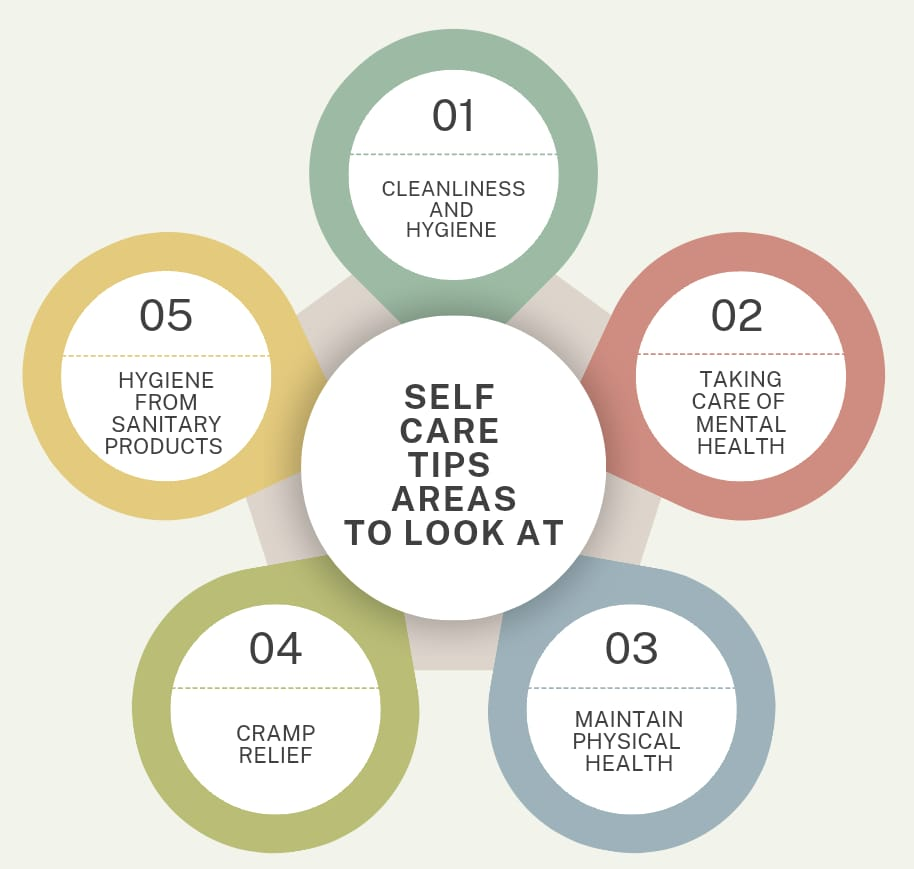
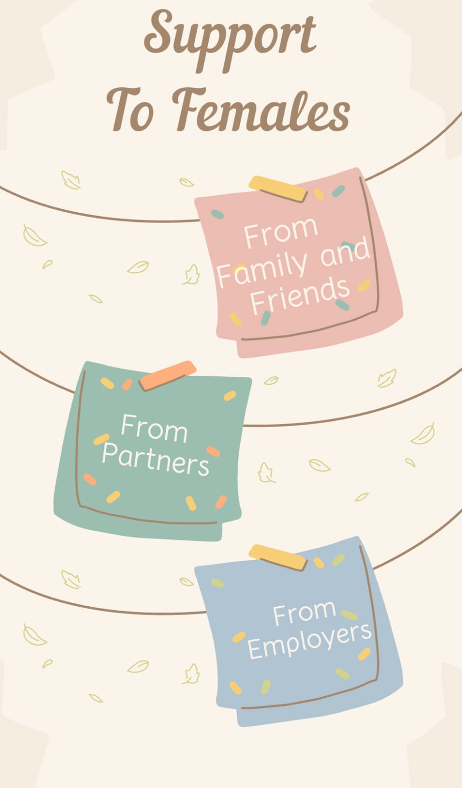

EFFECTIVE CARE TIPS
Taking care during menstruation is crucial for both physical and mental well-being. Neglecting menstrual health can lead to complications such as infections, anemia, and increased risk of reproductive health issues. Moreover, poor menstrual hygiene can exacerbate menstrual cramps, bloating, and mood swings, affecting daily life and productivity. By prioritizing self-care during menstruation, individuals can mitigate these risks, reduce discomfort, and boost their overall health and confidence. This includes practicing good hygiene, staying hydrated, eating nutritious food, exercising regularly, and seeking support from loved ones or healthcare professionals when needed. By taking care during menstruation, individuals can take control of their health, well-being, and lives.
Here's a comprehensive guide to self-care during menstruation, covering cleanliness, mental health, physical health, cramp relief, and hygiene.
We've also included tips for people around her to support her during this time.
SELF CARE FOR FEMALES DURING PERIODS

CLEANLINESS AND HYGIENE
- Change sanitary products regularly: Change pads, tampons, or menstrual cups every 4-8 hours to prevent bacterial growth and odor.
- Wash hands: Wash hands before and after handling sanitary products.
- Clean the genital area: Gently clean the genital area with mild soap and water.
- Avoid scented products: Avoid using scented soaps, bubble baths, or douches, as they can irritate the genital area.
MENTAL HEALTH
- Practice relaxation techniques: Engage in relaxation techniques like deep breathing, meditation, or yoga to reduce stress and anxiety.
- Connect with loved ones: Reach out to friends and family for emotional support.
- Indulge in self-care activities: Enjoy activities that bring joy, such as reading, listening to music, or taking a warm bath.
- Seek professional help: If experiencing severe mood swings, depression, or anxiety, consider seeking help from a mental health professional.
PHYSICAL HEALTH
- Stay hydrated: Drink plenty of water to help reduce bloating and cramps.
- Eat nutritious food: Focus on whole, nutrient-rich foods like fruits, vegetables, whole grains, and lean proteins.
- Exercise regularly: Engage in gentle exercises like yoga or walking to help reduce cramps and improve mood.
- Get enough sleep: Aim for 7-8 hours of sleep per night to help regulate hormones and reduce fatigue.
CRAMP RELIEF
- Over-the-counter pain relievers: Consider taking over-the-counter pain relievers like ibuprofen or acetaminophen to help alleviate cramps.
- Warm compresses: Apply a warm compress to the lower abdomen to help relax the uterine muscles.
- Heat therapy: Use a heating pad or take a warm bath to help soothe cramps.
- Herbal teas: Drink herbal teas like ginger, chamomile, or peppermint to help calm the body and reduce cramps.
HYGIENE FROM SANITARY PRODUCTS
- Choose breathable products: Opt for sanitary products with breathable materials to reduce moisture and bacterial growth.
- Avoid sharing products: Never share sanitary products, as this can spread bacteria and increase the risk of infection.
- Dispose of products properly: Wrap used sanitary products in a plastic bag and dispose of them in a trash can.
- Wash reusable products: Wash reusable sanitary products, like menstrual cups or cloth pads, with soap and water.
SUPPORT FROM OTHERS DURING PERIODS

FROM FAMILY AND FRIENDS
- Be understanding and empathetic: Be patient and understanding when she's experiencing cramps, mood swings, or fatigue.
- Offer emotional support: Listen to her concerns and offer words of encouragement.
- Help with household chores: Assist with household tasks, like cooking or cleaning, to reduce her workload.
- Encourage self-care: Support her in practicing self-care activities, like exercise, meditation, or spending time in nature.
FROM PARTNERS
- Communicate openly: Talk to her about her needs and feelings during menstruation.
- Be patient and understanding: Be patient and understanding when she's experiencing cramps, mood swings, or fatigue.
- Offer physical comfort: Offer physical comfort, like hugs or massages, to help alleviate cramps and stress.
- Help with intimacy: Understanding if she's not in the mood for intimacy during menstruation, and find alternative ways to connect.
FROM EMPLOYERS
- Provide a supportive work environment: Create a supportive work environment by providing access to sanitary products, flexible work arrangements, and understanding managers.
- Offer menstrual leave: Consider offering menstrual leave or flexible work arrangements to support employees during menstruation.
- Educate employees: Employees about menstruation, its effects, and the importance of supporting colleagues during this time.
- Foster an open culture: Encourage an open culture where employees feel comfortable discussing their needs and concerns related to menstruation.
Menstruation is a natural part of life, and with the right mindset and strategies, you can turn it into a positive experience. As you incorporate these tips into your daily life, remember that you're not just managing your periods, you're taking care of your overall well-being. Keep loving yourself, inside and out. By embracing these simple yet effective tips, you'll be better equipped to manage your menstrual cycle with confidence and poise. Remember, your body is amazing, and with the right knowledge, you can take control of your menstrual health. Stay empowered, stay informed, and stay in sync with your body. With these tips, you'll be well on your way to a more comfortable, stress-free menstrual experience.